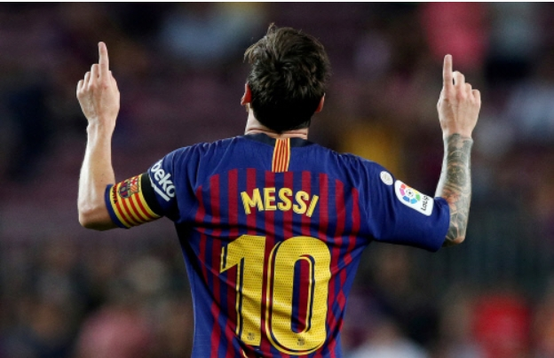

git commit -- allow -m "trigger rebuild" git push
박성호의 축구선수 top 7
Lionel Messi
Neymar
Kylian Mbappe
Paulo Bruno Dybala
Ronaldinho
Cristiano Ronaldo
Park Seong Ho
Lionel Messi
1987년 6월 24일태어나 170cm에 불과한 키로 전세계의 축구인들을 열광시키는 힘을 가졌다. 아르헨티나 국적의 FC 바르셀로나 소속 축구 선수. 포지션은 윙어와 중앙 공격수이며, 현재 클럽과 국가대표팀에서 모두 주장을 맡고 있다. 발롱도르, FIFA 올해의 선수, 유러피언 골든슈 역대 최다 수상자이자 FC 바르셀로나, 라리가, 아르헨티나 역대 최다 득점자에 이름을 올리고 있는 선수이다. 